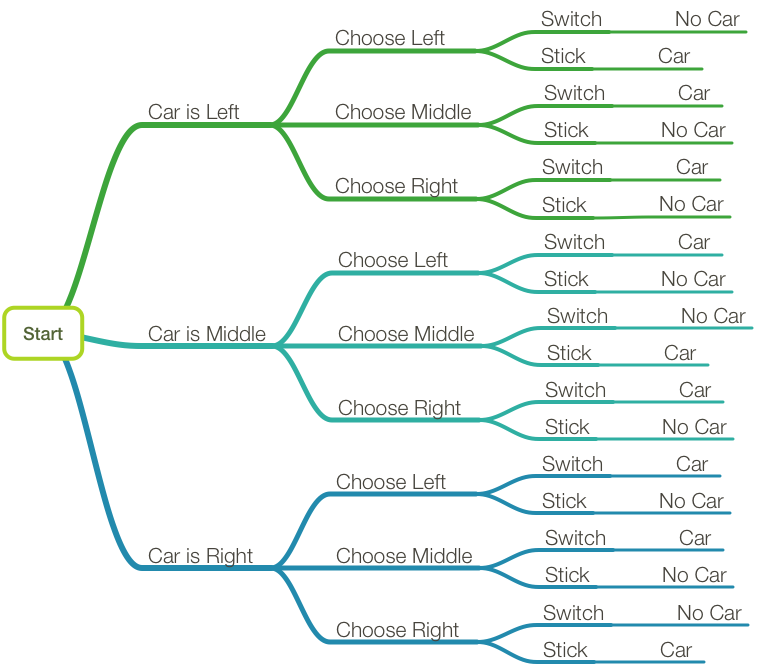

Monty Hall
The Monty Hall problem is a great example of how counter-intuitive probability can sometimes be. It goes something like this: say you’re on a gameshow, with the chance to win a car. You’re shown three doors, and the car is behind one, goats behind the other two. You pick a door, say the leftmost, but then the host of the gameshow stops you before it’s opened. He opens one of the two doors you didn’t pick, revealing a goat. He then asks you if you’d like to change your decision. So? Do you?
Perhaps surprisingly, you should change your decision. Your chances of winning a car go from 1/3 to 2/3.
If you’ve not thought for a while about the problem, the answer above might sound instinctively wrong. A few blog posts over the past few weeks have made an effort to put some concrete numbers to the statistics, running simulations of each possibility, and counting up the amount of wins and losses.
I was still a little unsatisfied, though. I mean, showing me the actual numbers is fine, but I’d like something a little more proof-y. You can get close with a diagram:

Which makes it pretty clear what’s going on: since the host has to show a goat when he opens a door, if you’ve picked a goat, then the only door left after the host opens one is the car. That means that if you switch and pick a goat, you have to win. So if you decide to switch, then what you want to do is pick a goat first, and the chances of that are 2/3.
It would be far cooler if you could get some representation of that diagram in code, though.
Turns out we can! In Swift and Haskell (I’m branching out) you can represent probability in a list-like structure, with each element of the list being a tuple of some value and that value’s probability. All the probabilities in the list itself should add up to one. Here’s what it looks like in Swift:
and Haskell:
Being a list kind of thing, ideally you’d want to be able to transform the elements, with a map kind of thing:
extension Prob {
func fmap<T>(f: Element -> T) -> Prob<T> {
return Prob<T>(contents.map { (v,p) in (f(v), p) })
}
}So far, though, the probability information is kind of superfluous. There’s not even a decent way to generate it. How about we get it from a list, where we assume all things in the list have equal chances of happening:
extension CollectionType where Index.Distance == Int {
var equalProbs: Prob<Generator.Element> {
let p = 1.0 / Double(count)
return Prob<Generator.Element>(map { v in (v,p) })
}
}equalProbs :: [a] -> Prob a
equalProbs x = Prob $ map (flip (,) (1%n)) x
where n = fromIntegral (length x)Which is fine, I suppose, but still not very interesting. What we want is the idea of “branching” - like in the diagram. “If event A happens, then event B has X chance of happening, and event C has Y chance of happening”.
The normal rules of probability apply: the overall probability of B happening is equal to the probability of A multiplied by X. You could have several layers of branching from B and C onwards, with this multiplication happening at each stage.
You could represent this in code with a function f, which takes an event (A) and returns a new bunch of probabilities (B and C). Then, to get the overall probability of each, you’d have to flatten it. What you want, then, is a function that travels over a list of events and their probabilities, applying f to each, and flattening the result, by multiplying the probabilities of the inner lists by the probability of the event which generated it.
extension Prob {
func flatMap<T>(f: Element -> Prob<T>) -> Prob<T> {
return Prob<T>(contents.flatMap { (v,p) in
f(v).contents.map { (x,ip) in (x,p*ip) }
})
}
}instance Monad Prob where
return = pure
Prob xs >>= f =
Prob [(y,px*py)|(x,px) <- xs, (y,py) <- getProb(f x)]Hey look! The M-word. Never mind that. Anyway…
Now we have enough tools to stimulate some basic probabilities. Let’s say you’re playing a game, which begins with a coin flip. If you get heads on the coin flip, it confers some advantage, and you have a 70% chance of winning. Otherwise, you’ve a 50% chance.
enum Coin: String { case H, T }
enum Result: String { case Win, Lose }
func play(c: Coin) -> Prob<Result> {
switch c {
case .H: return Prob([(.Win,0.7),(.Lose,0.3)])
case .T: return [.Win,.Lose].equalProbs
}
}
[Coin.H,.T]
.equalProbs
.flatMap(play)
// 0.35: Result.Win
// 0.15: Result.Lose
// 0.25: Result.Win
// 0.25: Result.Losedata Coin = H | T deriving Show
data Result = Win | Lose deriving Show
let play H = Prob [(Win,7%10),(Lose,3%10)]
play T = equalProbs [Win,Lose]
equalProbs [H,T] >>= playThere’s an obvious problem: duplicates. We need some way to combine the results by adding their probabilities together. To be honest, this was the least interesting part, so I’ll just dump the code here:
public enum Ordering { case LT, EQ, GT }
extension SequenceType {
private typealias A = Generator.Element
public func mergeBy( comp: (A, A) -> Ordering
, _ merge: (A, A) -> A) -> [A] {
var result: [A] = []
for h in sort({ e in comp(e) == .LT }) {
if case .EQ? = result.last.map({e in comp(h,e)}) {
result.append(merge(result.removeLast(),h))
} else {
result.append(h)
}
}
return result
}
}
extension Prob {
public func mergeProbs
(comp: (Element,Element) -> Ordering) -> Prob {
return Prob(contents:
contents.mergeBy( {(a,b) in comp(a.0,b.0)}
, {(a,b) in (a.0,a.1+b.1)})
)
}
}eqing :: (a -> a -> Ordering) -> (a -> a -> Bool)
eqing c = (\a b -> case c a b of EQ -> True
_ -> False)
mergeBy :: (a -> a -> a) -> (a -> a -> Ordering) -> [a] -> [a]
mergeBy m c = (foldl1' m <$>) . groupBy (eqing c) . sortBy c
mergeProbs :: Ord a => Prob a -> Prob a
mergeProbs =
Prob . mergeBy (fmap . (+) . snd) (comparing fst) . getProbNow we get some nicer probabilities, though:
func comp(a: Result, b:Result) -> Ordering {
switch (a,b) {
case (.Win,.Win),(.Lose,.Lose): return .EQ
case (.Lose,.Win): return .LT
case (.Win,.Lose): return .GT
}
}
[Coin.H,.T]
.equalProbs
.flatMap(play)
.mergeProbs(comp)
// 0.4: Result.Lose
// 0.6: Result.Wininstance Ord Result where
compare Win Lose = GT
compare Lose Win = LT
compare _ _ = EQ
mergeProbs ( equalProbs [H,T] >>= play )And you can see what effect a loaded coin would have on your chances:
Prob([(Coin.H,0.7),(.T,0.3)])
.flatMap(play)
.mergeProbs(comp)
// 0.36: Result.Lose
// 0.64: Result.WinSo how does this apply to Monty Hall? Well, we’ve actually done most of the work already. We’ll represent the doors as an Int, and the choice by an enum.
Then, a chances function. The logic here is a bit dense. First of all, if you’re going to stick, it doesn’t matter how many doors the host opens: your chance of getting a car is 1/n, where n is the number of doors. However, if you’re going to switch, two things need to happen: you need to not pick the car on your first choice, and you need to pick the car on your second choice. The chance of picking the car on your second choice (if the one you picked on your first choice wasn’t the car) is the one over the number of doors, minus the number of doors the host opens, minus one.
public func chances(n: Int, _ p: Int, _ c: Choice)(_ d: Int)
-> Prob<Bool> {
switch c {
case .Stick : return (1...n).equalProbs.fmap(==d)
case .Switch:
let notFirst = chances(n,p,.Stick)(d).fmap(!)
let second =
Repeat(count: (n-p)-2, repeatedValue: false) + [true]
return notFirst.flatMap { f in
second.equalProbs.fmap { s in f && s }
}
}
}chances :: Int -> Int -> Choice -> Int -> Prob Bool
chances n _ Stick d = fmap (==d) (equalProbs [1..n])
chances n p Switch d =
(&&) . not <$>
chances n p Stick d <*>
(equalProbs $ True : replicate (n-p-2) False)Finally, the chanceOfCar function:
public func chanceOfCar
(n: Int, _ p: Int, _ s: Choice)
-> Prob<Bool> {
return (1...n)
.equalProbs
.flatMap(chances(n,p,s))
.mergeProbs(comp)
}chanceOfCar :: Int -> Int -> Choice -> Prob Bool
chanceOfCar n p s = mergeProbs $
equalProbs [1..n] >>=
chances n p sWhich returns, as you’d expect, 1/3 chance of car if you stick, and 2/3 if you switch.
One of the final cool things you can do with this is change the number of doors, and the number of doors the host opens, and see what happens:
The advantage gets less and less, but never goes away.
If you check out the Wikipedia entry on the problem, the formula for -doors is given: .
We can plug that straight in to our versions, to see if they’re correct:
let sample = [(n,p)| n <- [3..20], p <- [1..(n-2)]]
let expect = fmap frmla sample
where frmla :: (Integer,Integer) -> Rational
frmla (n,p) = (n - 1)%(n*(n-p-1))
let actual = fmap t sample where
t (n,p) = truePrb $ getProb $ chanceOfCar n p Switch
truePrb = fromJust . (fmap snd) . (find fst)
expect == actualAnd it works! (I didn’t try the Swift version, because of floating-point inaccuracies)
You can see the code used here.